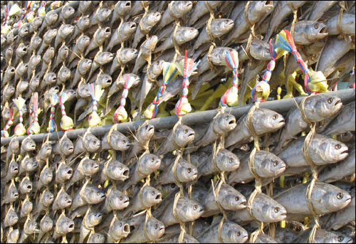
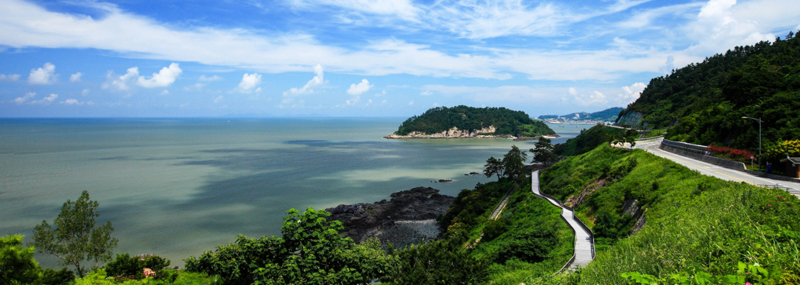

내 고향 소개 - 전라남도 영광
영광이란?
- 전라남도 북서부에 위치한 군. 전라남도에서 유일하게 노령산맥 이북에 있다. 북쪽이 전라북도 고창군, 동쪽으로 장성군, 남쪽으로 함평군과 접해 있는 고장이다.
- 인구 수는 2023년 2월 기준으로 52,192명이다.
- 군청 소재지는 영광읍 중앙로 203 (무령리)에 위치해있다.
유명 음식 및 특산물

굴비
- 오래 전부터 한국인의 밥상을 책임져 오는 인기 보존식품. 굴비는 소위 밥도둑으로 일컬어지는 반찬 중 한 가지로, 전라남도 영광군 법성포의 특산품이다.
- 사람들은 굴비를 연상하면 영광 법성포 굴비를 곧잘 떠올리지만, 법성포 인근의 칠산 바다에서 조기가 더 이상 살지 않고, 대신 추자도 인근에 조기 어장이 형성되어 있기 때문에 법성포 굴비는 추자도산 조기를 많이 사용하여 만들어진다. 그래도 영광에서 조기가 건조되니 '여전히 영광굴비는 영광굴비다'라는 주장이 있다.
관광명소/축제

백수해안도로
- 영광군 백수읍 길용리에서 백암리 석구미 마을까지 16.8km에 달하는 해안도로로, 기암괴석ㆍ광활한 갯벌ㆍ불타는 석양이 만나 황홀한 풍경을 연출하는 서해안의 대표적인 드라이브 코스이다.
- 특히 해안도로 아래 목재 데크 산책로로 조성된 3.5km의 해안 노을길은 바다 가장 가까운 곳에서 걷기와 함께 아름다운 풍경을 감상할 수 있다.
영광 불갑산 상사화 축제
- 영광 9경 중의 하나로 꼽히는 불갑산 상사화는 전국 최대 규모의 군락지를 자랑하고 있으며, 매년 9월 중순을 전후하여 축제를 개최한다.
- 수선화과에 속하는 상사화는 세계적으로 20여종이 분포돼 있다. 한국, 중국, 일본에만 분포하는 동북아시아 특산소이다. 염색체 크기가 크고 수가 다양하며 구근식물이고 종간 자연교잡종이 많이 있다.
영광의 자랑거리
출산율
- 2019년 2.54명의 출산율을 기록해 기존 1위였었던 해남군을 제치고 전국 합계 출산율 1위를 달성했다. 2021년까지 출산율 1.87명으로 1위를 유지하고 있다.
폭넓고 다양한 축제
- 영광군의 축제는 세계 최대 상사화 군락지인 불갑사와 불갑사 관광지에서 열리는 '영광 불갑산 상사화축제', 매년 5월 법성포에서 열리는 '법성포 단오제', 영광스포티움 일원에서 열리는 '영광 e-모빌리티 엑스포', 백수해안도로 노을전시관에서 펼쳐지는 '백수해안도로 노을축제' 등이 있다.
- 이렇게 영광의 경우 9월 중에 열리는 상사화축제를 시작으로 e-모빌리티 엑스포, 백수해안도로 노을축제가 연달아 열리는 만큼, 영광에서 축제의 맛과 재미를 누리려면 가을에 방문하는 것을 추천한다.
e-모빌리티 산업 육성
- 최근에는 관내 대마전기자동차산업단지를 중심으로 e-모빌리티 산업을 육성하려 시도 중이다. 규제자유특구로 지정이 되어서 관련 기업체 유치가 더욱 용이할 전망이며, 최근 광주과학기술원이 영광에 이와 관련된 2캠퍼스 건립의사를 표명해, 관련 인구의 유입과 산학연계가 이루어질 것으로 보인다. e-모빌리티 이외에도 영광군에 위치한 한빛 원자력 본부와도 연계가 가능할 것으로 전망된다.